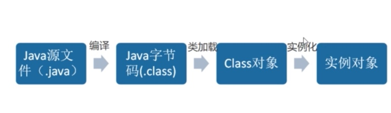

使用反射和字节码的技术，在运行期创建指定接口或类的子类以及其实力对象的技术。通过这个技术可以无侵入的为代码进行增强

动态代理技术实现主要方式
JDK原生动态代理
只能基于有接口代理对象进行代理
- Proxy: Proxy是所有动态代理的父类，它提供了一个静态方法来创建动态代理的class对象和实例
InvocationHandler： 每个动态代理实例都有一个关联的InvocationHandler。在代理实例上调用方法时，方法调用被转发到InvocationHandler的invoke方法。
public class DynamicProxyTest {
interface IHello{
void sayHello();
}
static class Hello implements IHello {
@Override
public void sayHello() {
System.out.println("Hello world");
}
}
static class DynamicProxy implements InvocationHandler {
Object originalObj;
Object bind(Object originalObj) {
this.originalObj = originalObj;
return Proxy.newProxyInstance(originalObj.getClass().getClassLoader(), originalObj.getClass().getInterfaces(), this);
}
@Override
public Object invoke(Object proxy, Method method, Object[] args) throws Throwable {
System.out.println("welcom ");
return method.invoke(originalObj, args);
}
}
public static void main(String[] args) {
IHello iHello = (IHello) new DynamicProxy().bind(new Hello());
iHello.sayHello();
}
}
CGLIB动态代理
CGLIB（Code Generation Library） 是一个基于ASM的字节码生成库,它云讯我们在运行时对字节码进行修改或动态生成.CGLIB通过继承方式实现代理.
- Enhancer: 来指定要代理的目标对象、实际处理代理逻辑的对象，最终通过调用create()方法得到代理对象，对这个对象所有非final方法的调用都会转发给MethodInterceptor;
- MethodInterceptor: 动态代理对象的方法调用都会转发到intercept方法进行增强。
public class HelloInterceptor implements MethodInterceptor {
@Override
public Object intercept(Object o, Method method, Object[] objects, MethodProxy methodProxy) throws Throwable {
Object o1 = methodProxy.invokeSuper(o, objects);
System.out.println("代理执行完成");
return o1;
}
static class HelloService {
public void sayHello() {
System.out.println("hello, Lily");
}
}
public static void main(String[] args) {
Enhancer enhancer = new Enhancer();
enhancer.setSuperclass(HelloService.class);
enhancer.setUseCache(false);
enhancer.setCallback(new HelloInterceptor());
HelloService helloService= (HelloService) enhancer.create();
helloService.sayHello();
}
}